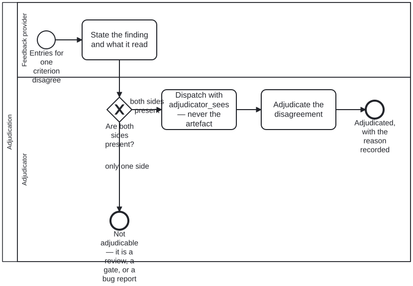

Generated from
cat-harness/skills/sdlc/sdlc-core/adjudication.md— do not edit here.
Adjudication — judgement, when the mechanism ran out of facts
Skill id:
adjudication· Package:sdlc-core
Why this exists
Owner, 2026-09-21: “during review process a concensus/mechanical agreemenet was not reached, in this case Judgment is needed and Adjudication process being … it is Judgment of >= 1 Feedback Provider’s feedback. still have same dispensation process (reason for choice as per contextual requirements).”
The shape was already implemented seven times and generalised none.
Measured 2026-09-22 over processes/*.bpmn and src/:
| where | the decision, in its own words |
|---|---|
translation-workflow · Task_Adjudicate | “The round trip establishes that two readings differ. Which one is right is a human call.” |
ingest-l1-completeness-gate · Task_FlagDrift | “A machine can detect that two readings differ. Which one is right is a human call.” |
refresh-materialized · Task_Adjudicate | “A human or agentic decision, never a merge rule. Which side wins depends on why the local edit was made, and a process that picked automatically would be choosing without the one fact that decides it.” |
review-narrative · Task_AdjudicateVoice | “Three outcomes, all legitimate: the register is wrong for this genre; the criterion does not belong in this genre; or the block is a stated exception and a reviewer entry records why.” |
voice-review · Task_Adjudicate | “The same three outcomes … fix the prose; scope it on the voice; or the rule applies and this block is an exception.” |
src/routes/relevance.ts | “writing human_adjudicated alongside — never overwriting — the agent’s assessed_by. Both survive.” |
schemas/library/bib-verification.ts | a discriminated Verifier union, agent-only vs human-adjudicated, “and *also carry human_adjudicated if a human has subsequently”* ruled |
The first two are the same sentence twice, written by different hands about different subjects. The last two are an HTTP route and a schema that share no code with the diagrams and arrived at the diagrams’ rule anyway.
“Named nowhere” would be the easy summary and it is wrong. It is named
once — translation-workflow.bpmn’s Lane_Reviewer documentation states the
entry condition, the accountability and the dispensation rule together:
“a reviewer reports, an adjudicator settles. The word is used here because the passage reaching this lane is one where a checker and a translator disagree, and somebody has to choose between them WITH a reason. That reason is the record, not the choice.”
Which is the whole skill, in one lane’s documentation, in one diagram, reachable only by somebody already reading that diagram. The gap was never vocabulary. It was that nothing generalised the one statement of it, so each new subject restated it and the eighth would have restated it again.
One judgement, six questions — and the split that followed
Measured 2026-09-23 (bean bvuk, #1073), and it changes how you call this process.
adjudication.bpmn used to hold two things: the judgement, and three outcomes
done about it — the finding stands, the criterion is scoped, a dispensation is
granted. Six diagrams called it. Only two asked a question those three
answer: the review-narrative and voice-review rows above. The other four
ask whether a drift is real, whether a passage is acceptable, whether two
entries agree, and which side wins a conflict. None of those has a criterion
to scope or a dispensation to grant — and a callActivity runs the whole
subprocess, so all four ran the outcome half anyway.
Two things worth carrying, because both were established by checking rather than reasoning:
- No caller branched on the outcome, and none could. Every one of the six
call activities has exactly one outgoing flow, and the process had one
settled end event: all three branches reconverged on
A_RecordEntry. So the mismatch was invisible in the callers’ shape — a diagram asking “which side wins” and one asking “does this finding stand” looked identical. - Passing each caller its own codes could not fix it. That was the first
proposal. The codes selected three different TASKS, so a caller handed
local-winswould have had it pointing atA_ScopeCriterion. The branches had to move, not the enum.
So the split is at the judgement:
| what | where it lives | why there |
|---|---|---|
| entry condition, untainted dispatch, person-or-agent restriction | adjudication.bpmn | it must not vary, and restating it per caller is how it drifts |
the three QA-criterion outcomes, A_RecordEntry, the dispensation | criterion-adjudication.bpmn | it depends on what was asked |
a requirements document’s sign-off: approve amend reject defer cancel (code list adjudication-requirement-set), A_RecordSignoff, GW_SignoffRecorded | crdm-signoff.bpmn (BA_Signoff), crdm-close.bpmn (BA_Confirm); spec-kit’s adjudicated status by the same codes | the answer moves a requirement SET’s stage (issue #2405, FR-013) |
The requirement-set caller records before it branches. Every answer goes
to A_RecordSignoff, which appends a requirement-signoff attestation (the
attestations graph, test/attestations/requirement-signoff/<set>.attestations.json):
who — kind, id, actor, the QA reviewer’s identity fields — when, about
what (the set or one member), the outcome, the stage it moves the set to, the
reason and the permalink to the issue comment. GW_SignoffRecorded then reads
the record BACK through decisions/requirement-signoff-recorded.dmn, with facts
check:requirements --signoff-facts <reqset:slug> computes from the store, so a
sign-off nobody recorded loops back rather than proceeding (SC-008).
What that means when you call it
A_Adjudicate declares <cat-harness.processes:adjudication defers="caller"/> — it IS an
adjudication and the permitted answers are yours. Declared rather than left as
a missing codes, so a marker lost by accident and a deferral on purpose do
not parse the same.
- Asking the QA-criterion question? Call
Process_CriterionAdjudicationand declare<cat-harness.processes:adjudication accepts="stands scope dispensation"/>. The engine compares your list with what that process actually offers. - Asking something else? Call
Process_Adjudicationand declare<cat-harness.processes:adjudication codes="…"/>on your own call activity, with your own gateway coding the same set. The engine refuses a mismatch between the two, and refuses a partly-coded gateway, which reads as complete. - Declaring nothing is legal and reported by
check:workflow-refs— the four callers above are in that state on purpose. What each should ask is open, and guessing would make an undecided thing look checked.
Whatever you ask, A_RecordEntry’s rule follows the outcome: a judgement
nobody wrote down is indistinguishable from a checker that was never run. It
is relaxable="false" wherever it lands, which is now with the caller that
records, because the entry written depends on what was adjudicated.
Two senses of the word, and only one is this
The corpus also uses adjudicated as an adjective meaning settled:
evidence-retrieval calls published DAKs “already-adjudicated guidance”, and
ingest-extract-structure says extracted candidates are “never adjudicated
verdicts”. Both are correct English and neither is this process. Grepping for
the word finds them; only the activity list above is the process.
What makes a disagreement ADJUDICABLE
Not “somebody is unhappy”. schemas/sdlc/block-qa.ts already declares the three
reviewer kinds — script, agent, human — and allows multiple entries per
criterion, which makes the entry condition computable rather than declared:
| state | what it is |
|---|---|
| mechanical agreement | the script entry passes |
| consensus | entries of different kinds agree on one criterion |
| adjudicable | entries for ONE criterion disagree |
So you are in adjudication when the sidecar holds two entries for the same criterion that do not agree. Anything else is a review, a complaint, or a bug report, and each of those has somewhere else to go.
A missing entry is not a disagreement. One reviewer and no checker is a
review; one checker and no reviewer is a gate. Adjudication needs both sides
present, which is why it cannot be entered by an actor simply declaring it —
and why adjudication.bpmn’s first gateway leaves the process rather than
guessing.
The adjudicator is dispatched, not briefed
This skill does not restate the parties — untainted-verification
owns them, and the split matters more here than anywhere else, because the
adjudicator is the party best placed to ruin the measurement:
adjudicator | is given
adjudicator_seesand the checker’s output — never the artefact itself | producespass/warn/fail, each drift named
An adjudicator shown the artefact can talk itself into any reading of the
finding, and that failure raises no error: it produces a verdict that measured
nothing. UntaintedDispatch declares the context per criterion and
untaintedPartitionDefects reports overlap when both parties can read the
same file. Read that skill before you dispatch one.
The adjudication LEADS; the checker’s entry is KEPT
voice-review.bpmn, and this is the rule the whole skill turns on:
“The adjudication LEADS the criterion and the script entry is kept beneath it: a disagreement between a checker and a reviewer is information.”
Do not resolve the disagreement away. Both entries stay in the sidecar, the human’s on top under the sweep’s “most-recent matching-hash entry wins” rule. A sidecar showing only the winning answer has lost the fact that a checker read it differently — which is exactly what somebody re-running the check next month needs to know.
Two subsystems reached this independently, which is the strongest evidence
here that it is the right rule rather than a local convention:
/api/relevance/adjudicate writes human_adjudicated alongside assessed_by
so the dashboard can distinguish “an agent thinks this is core” from “the
author agrees”, and bib-verification.ts carries the same pair on a
discriminated union. Neither imports anything from the diagrams.
This is also the answer to “adjudication if code and narrative disagree”: record the disagreement, lead with the judgement, keep the other entry.
The dispensation is a VERSION, never a precedent
The outcome carries its reason. That mechanism already exists and is
schema-backed — block-qa/v1’s multi-reviewer primitive, documented at length
in q-usage-watcher (the science layer):
- a
kind: "human"entry withresult: "pass"overrides the script’sfailfor the same criterion; - only while its
field_hashmatches the current source files; notescarries the reason — “reason for choice as per contextual requirements”.
That hash gate is the design, not a limitation. A dispensation is scoped to the version it was granted against: change the block and it lapses, and must be re-granted. So a dispensation never becomes precedent, and there is nothing to overturn later — the source moving overturns it.
A dispensation with no notes is not a dispensation. It is an override
somebody applied to get to green, and nobody can review it afterwards. So
A_Dispensation is marked relaxable="false" — in
criterion-adjudication.bpmn, with A_RecordEntry, since the 2026-09-23
split; this paragraph said adjudication.bpmn until 2026-09-24, four sections
after §”One judgement, six questions” had already recorded the move. The
judgement is free and the record is not, because a judgement nobody wrote
down is indistinguishable from a checker that was never run.
Who adjudicates — a skill that spreads, an entitlement that does not
| object | what it is |
|---|---|
feedback-provider (role) | offers a finding — a checker, a review agent, a reader, an SME. Plural by design: the owner’s “Judgment of >= 1 Feedback Provider’s feedback”. |
adjudicator (role) | settles it, with a reason. Inherits reviewer. |
adjudication (permission) | may WRITE the settling entry. |
Knowing the discipline and being entitled to apply it are different, and the
repository already separates them. permissions.json: “a permission
CROSS-CUTS roles” — which is exactly what the measurement above shows.
Adjudication happens in four lanes bound to four different roles
(narrative-reviewer, translation-adjudicator, reviewer, user), so:
- the skill is carried by every role whose lane holds an adjudicate activity, because each of them has to be able to tell an adjudicable disagreement from a complaint;
- the permission
adjudicationis held by the actor, alongsidereview-comments(record a finding) andapproval-authority(accept a change). It is neither: settling a disagreement between two findings is not reporting one and not accepting the change.
A reviewer reports; an adjudicator settles. That is why review-task.bpmn
keeps accept-or-send-back in one lane: a process where every reviewer could
settle has no way to say who decided.
translation-adjudicator is the first specialisation and was the only
adjudicator role before this skill existed.
Where it sits against its neighbours
| store | holds | skill |
|---|---|---|
todos/feedback/ | a person’s feedback ON content — the intake | todo-review |
test/attestations/block-qa/ | the adjudicated (non-script) reviewer entries per criterion — the record, on main | the qa-* family; schema qa-attestations/v1 |
test/results/block-qa/ | the derived report, which keeps a projection composed from the store; its record is on the qa-reports branch | the qa-* family |
beans/ | the work plan | todo-manager |
Adjudication consumes an intake and writes a record. It is not a rival to
either, and todo-review’s own disambiguation block — which separates itself
from todo-manager and is silent about verdicts — is the seam it fits into.
What this does NOT cover
The narrative-asserts-code axis. Whether prose asserts what an artefact
actually does is a different question, currently answered only for Lean
(proof-narrative-lean-equiv, beans nrv8 and qusg).
code-node-review asks whether a NODE is correct — that
it declares what it is, that its references resolve — not whether the prose
matches. Generalising that is a separate and larger decision, and this skill
deliberately stops short of it.
Related
untainted-verification— the parties and what each is given. Adjudication is what happens when they disagree.q-usage-watcher(the science layer) — the dispensation mechanism, documented where it was first applied.code-node-review,voice-editorial-review,voice-overlay-review— the reviews that produce the findings this settles.schemas/sdlc/block-qa.ts— the reviewer kinds, and why a model’s own claim is not the same kind of evidence as a person’s.
Processes that run this skill
This skill has its own process: Adjudication.

| process | step(s) that name it |
|---|---|
| Narrative review | Adjudicate the voice findings (calls a sub-process) |
| Voice overlay review | Adjudicate: prose, scope, or exception (calls a sub-process) |
| Refresh materialized remote content | Adjudicate the conflict (calls a sub-process) |
| Translation Workflow | Adjudicate flagged passage (human reviewer) (calls a sub-process) |
| CRDM close-out | Confirm all criteria met (calls a sub-process); Record the sign-off as a requirement-signoff attestation |
| CRDM Phase 5 — beans and sign-off | Sign off on requirements (calls a sub-process); Record the sign-off as a requirement-signoff attestation |
| Adjudication | Adjudicate the disagreement |
| Criterion adjudication | Adjudicate the criterion disagreement (calls a sub-process); Scope the criterion so it stops applying here; Grant a dispensation, with its reason; Write the entry that LEADS — keeping the checker’s beneath it |
| Requirements filing: promote, organise, trace, supersede, or retire | Review filed requirement, organisation, and sign off (calls a sub-process); Record requirement-signoff attestation and set stage |
| Content Change and Review | Adjudicate the disagreement (calls a sub-process) |
| Ingestion subprocess — the L1 completeness gate | Adjudicate the flagged passage (calls a sub-process) |